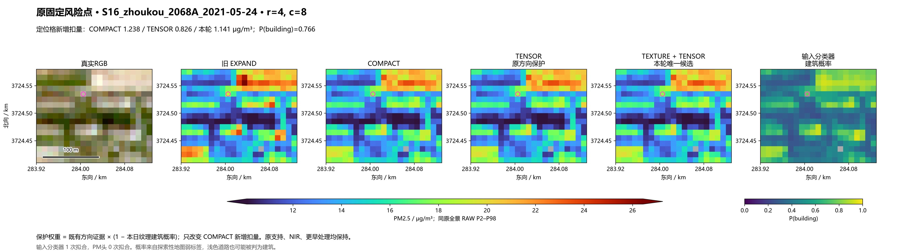
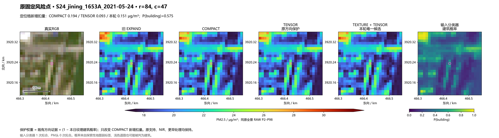
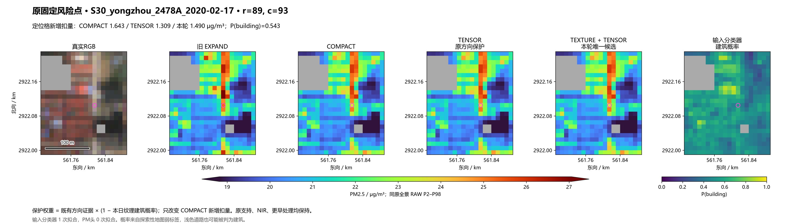
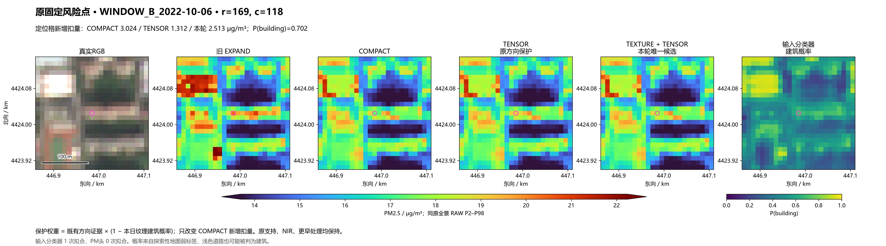
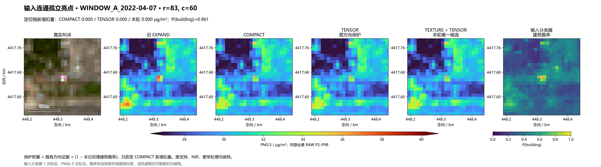
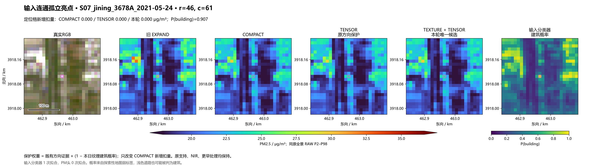
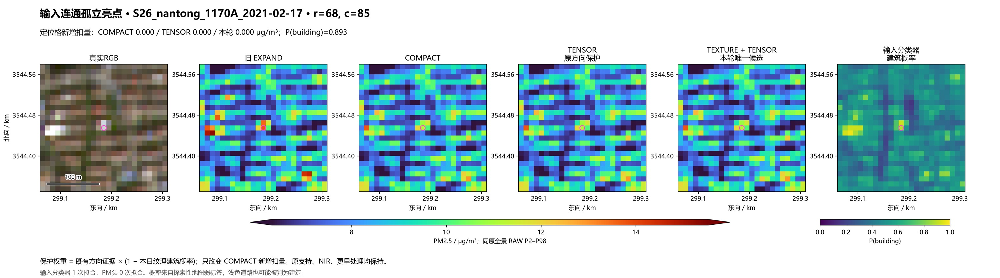

原生10米纹理 × 方向保护
原四波段、谱形、3×3 / 7×7有效邻域纹理与方向共28特征；用20地点训练、10地点留出。仅1次输入分类器拟合，0次PM头拟合；原156场加50事件场均已推理。旧36场仅迁移应用。
留出弱标签总体平衡准确率 74.4%。相关的高亮道路子集共 2760 格，97.7% 被判为建筑，平均建筑概率 0.655。总体分数不能替代亮道路分离证据。
全4171个COMPACT变化格：旧TENSOR退回 38.1% 新增扣量，本轮退回 15.3%；小亮区域处理更接近COMPACT，同时会减少道路保护。原231地图相交格退回比例由 37.2% 变为 15.9%，相对TENSOR最大额外压低 0.553 μg/m³。
下列七处沿用既有四风险点、三输入连通孤立亮点，未按本轮效果重选。三个控制原本无COMPACT新增扣量，故它们不变不能证明分类成功。灰色为原无效域，颜色范围沿用原全景RAW。
S16_zhoukou_2068A_2021-05-24
定位格：原TENSOR保留新增扣量 0.826 → 本轮 1.141 μg/m³；建筑概率 0.766。


S24_jining_1653A_2021-05-24
定位格：原TENSOR保留新增扣量 0.093 → 本轮 0.151 μg/m³；建筑概率 0.575。


S30_yongzhou_2478A_2020-02-17
定位格：原TENSOR保留新增扣量 1.309 → 本轮 1.490 μg/m³；建筑概率 0.543。


WINDOW_B_2022-10-06
定位格：原TENSOR保留新增扣量 1.312 → 本轮 2.513 μg/m³；建筑概率 0.702。


WINDOW_A_2022-04-07
定位格：原TENSOR保留新增扣量 0.000 → 本轮 0.000 μg/m³；建筑概率 0.961。


S07_jining_3678A_2021-05-24
定位格：原TENSOR保留新增扣量 0.000 → 本轮 0.000 μg/m³；建筑概率 0.907。


S26_nantong_1170A_2021-02-17
定位格：原TENSOR保留新增扣量 0.000 → 本轮 0.000 μg/m³；建筑概率 0.893。


锁定方案 · 高亮道路留出结果 · 231地图交格 · 原30对象 · 道路/工业相对TENSOR · PM/日期/事件汇总